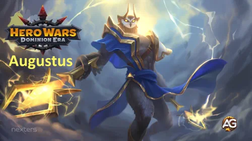
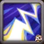
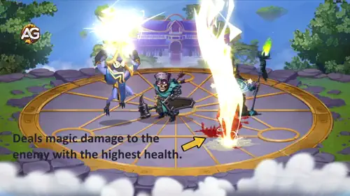
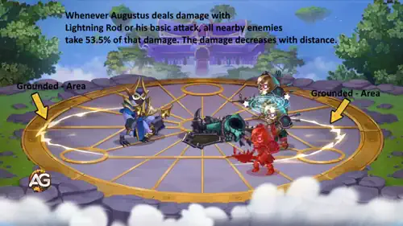
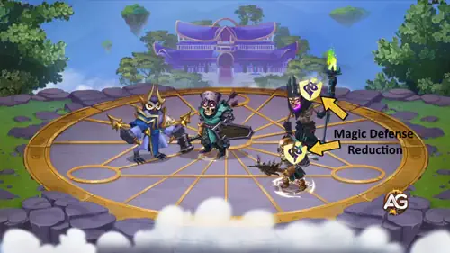
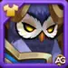
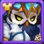
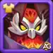
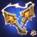
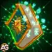

Augustus Leitfaden - Der ⚡Blitzbotschafter in Hero Wars: Dominion Era
- By: Alexandre Domingos. .
Augustus ist einer jener Helden, die sofort die Neugier der Spieler wecken – ein ruhiger, vom Himmel berührter Gesandter, der sanft spricht, aber mit Stürmen zuschlägt. In diesem Guide erfährst du, wie du sein wahres zerstörerisches Potenzial freisetzt – von seinen Donnerexplosionen bis hin zu seiner Synergie mit Orion, dem mächtigen Begleiter Khorus und sogar dem neuesten Frontlinien-Beschützer Electra. Wenn du Magier liebst, die Eleganz, rohe Kraft und brillante Team-Synergien vereinen, wird sich Augustus in deinem Kader sofort wie zu Hause fühlen.

Wer ist Augustus in Hero Wars: Dominion Era
Augustus ist ein mächtiger Magier der hinteren Reihe, dessen Donner-Magie massiven Burst-Schaden verursacht und gleichzeitig eine hervorragende Synergie mit energieverstärkenden und magiedurchdringenden Verbündeten bietet.
- Hauptrolle: Magier
- Zusätzlich: Burst-Schaden, Magie-Synergie
- Hauptattribut: Intelligenz
- Position: Kämpft in der hinteren Reihe
Trotz seiner gelassenen Persönlichkeit wird Augustus zu einer furchterregenden Macht, wenn er mit Helden kombiniert wird, die den Magieangriff verstärken oder die Aktivierung von Fähigkeiten beschleunigen. Seine Blitzfähigkeiten skalieren extrem gut, was ihn zu einer Top-Tier-Option für magiezentrierte Teams macht.
Er glänzt besonders in schnell aufgebauten Kombos, vor allem wenn er von Orions schnellem Energiezyklus und starker Magiedurchdringung, Khorus’ Magieverstärkung durch Schild-Effekte sowie Electras zuverlässigem Frontlinien-Schutz mit ihrem Magieangriffs-Waffenartefakt und ihrer starken Schadensabsorption unterstützt wird, die lange Kämpfe stabilisiert.
Augustus – Pro & Contra – Hero Wars: Web & Facebook
✅ Vorteile
- Hervorragende Skalierung von reinem Schaden, besonders in Kombination mit Albus oder Magiedurchdringungs-Teams.
- Starker Flächenschaden dank Blitzableiter und Schadensübertragungs-Effekten.
- Hervorragende Synergie mit Orion durch schnelle Ultimate-Aktivierung und Magiedurchdringungs-Boni seines Artefakts.
- Hoher Einfluss in langen Kämpfen, in denen seine Schadensverstärkung deutlich ansteigt.
- Nützlich gegen magie-resistente Teams, da ein Teil seines Schadens die Magieverteidigung umgeht.
❌ Nachteile
- Ist stark auf Magieangriffs-Ausrüstung und Artefakt-Entwicklung angewiesen, um sein volles Potenzial zu erreichen.
- Ohne Unterstützung nicht sehr widerstandsfähig; anfällig für frühen Burst-Schaden, sofern er nicht mit Axel oder einer starken Frontlinie kombiniert wird.
- Der Schadensübertragungs-Effekt nimmt mit zunehmender Distanz stark ab, wodurch die Positionierung wichtig wird.
- Hat Schwierigkeiten gegen Teams mit hoher Ausweichchance ohne ausreichende Genauigkeits-Unterstützung.
- Benötigt ein korrektes Team-Setup, um zu glänzen – schneidet in zufälligen oder nicht optimierten Aufstellungen schlecht ab.
Augustus – Priorität für Skill-Upgrades – Hero Wars: Dominion Era
Meistere Augustus: Lerne seine Blitzformeln, exakte Schadenswerte und die optimale Reihenfolge für Skill-Upgrades, um Burst-Schaden und Team-Synergien schnell zu maximieren.

1 – Lightning Rod
Lightning Rod trifft den Gegner mit der höchsten Lebenspunktezahl und verursacht hohen magischen Schaden. Einfache Erklärung für Einsteiger: Die Fähigkeit verursacht einen Prozentsatz der Lebenspunkte des Ziels (sehr stark gegen Tanks), ist jedoch durch ein magieskalierendes Maximum von Augustus begrenzt.
Formel – Ziel-Lebenspunkte: 40 % Leben
Formel – Max. magischer Schaden: 428.286 (max.: 300 % Magieangriff + (Stufe 130) × 150)
Vereinfacht erklärt: Hat das Ziel extrem viele HP, verursacht Lightning Rod 40 % dieser HP. Überschreitet dieser Wert jedoch das Maximum von Augustus, verwendet das Spiel stattdessen den oben angegebenen Grenzwert.
Entwicklungspriorität: Sehr hoch – Augustus’ wichtigste Burst-Fähigkeit; zuerst verbessern, um Frontliner mit hohen HP sofort zu entfernen oder stark zu schwächen.

2 – Path of Least Resistance
Diese passive Fähigkeit wandelt Augustus’ normale Angriffe in konstanten 83.081 magischen Schaden um und zwingt ihn, den Gegner mit der niedrigsten Magieverteidigung anzugreifen. Für neue Spieler: Augustus greift immer den Gegner an, der am anfälligsten für Magie ist, und schaltet so Unterstützer und fragile Magier schnell aus.
Formel – Magischer Schaden: 83.081 (50 % Magieangriff + (Stufe 130) × 115)
Warum das wichtig ist: Diese Fähigkeit sorgt dafür, dass Augustus auch zwischen seinen großen Treffern konstant Schaden verursacht. Da Schweigen sie nicht unterbricht, ist sie äußerst zuverlässig.
Entwicklungspriorität: Hoch – Früh nach Lightning Rod verbessern, um Augustus’ dauerhaften DPS zu erhöhen und Prioritätsziele schneller zu besiegen.
3 – Grounded
Jedes Mal, wenn Augustus mit Lightning Rod oder einem normalen Angriff Schaden verursacht, erleiden alle nahen Gegner einen Anteil von 53,5 % dieses Treffers.
Man kann es sich wie einen „Splash“-Effekt vorstellen: Das Hauptziel erhält den vollen Schaden, nahe Gegner einen Teil davon.
Gesamtschaden: 53,5 % des auslösenden Schadens
Formel – Schadensübertragung: 53,5 % ((Stufe 110) × 0,35 + 15 %)
Einfaches Beispiel: Trifft Augustus ein Ziel mit 100.000 Schaden, kann Grounded bis zu 53.500 Schaden auf nahe Gegner übertragen (abhängig von der Distanz). Besonders stark, wenn Gegner dicht beieinander stehen.
Entwicklungspriorität: Mittel-Hoch – Hervorragend für AoE und Teamkämpfe, aber weniger dringend als sein direkter Single-Target-Burst und der Kernangriffs-Boost.

4 – Superconductivity
Superconductivity wendet einen stapelbaren Debuff an, der bei jedem Treffer von Augustus die Magieverteidigung des Gegners für 6 Sekunden reduziert. Ist die Magieverteidigung vollständig durchdrungen, wird zusätzlicher magischer Schaden in reinen Schaden umgewandelt, der Resistenzen ignoriert.
Formel – Reduktion der Magieverteidigung: -3.993,93 (1,5 % Magieangriff + (Stufe 90) × 15 + 600)
Einfach gesagt: Jeder Treffer schwächt den Gegner gegen Magie. Mit der Zeit lassen sich Gegner so deutlich härter treffen – nicht nur von Augustus, sondern von allen magischen Verbündeten. Ein indirekter, aber sehr teamstärkender Effekt.
Entwicklungspriorität: Mittel – Sehr stark in langen Kämpfen und Magie-Kompositionen, setzt jedoch voraus, dass andere Fähigkeiten zuerst treffen. Daher nach den direkten Schadensskills verbessern.

Hinweis: Diese Fähigkeit besitzt eine außergewöhnliche Synergie mit Orion. Orion ist der schnellste Ultimate-Angreifer in Hero Wars und einer der wenigen Helden, die extrem schnell Energie aufbauen, wodurch er seine Ultimate wiederholt einsetzen kann. Jedes Mal, wenn Orion seine Ultimate wirkt, aktiviert er außerdem sein Waffenartefakt und gewährt allen Verbündeten Magiedurchdringung. Diese Durchdringung verstärkt die Effektivität von Augustus’ Fähigkeit erheblich und ermöglicht es ihm, noch mehr Schaden in reinen Schaden gegen Gegner umzuwandeln.
Beste Skins für Augustus – Hero Wars: Dominion Era
Entdecke die effektivsten Skins für Augustus in Hero Wars: Dominion Era, sortiert nach ihrem tatsächlichen Kampfeinfluss und ihrer Synergie mit seinen schadensskalierenden Fähigkeiten.

Standard-Skin
Wertebonus: Intelligenz +1.365
Entwicklungspriorität: Hoch – Bietet ausgewogene offensive und defensive Vorteile; erhöht Magieangriff, Magieverteidigung und physischen Angriff und ist damit ein starkes sekundäres Upgrade.
Gesamtanzahl an Intelligenz-Skin-Steinen für Maximalstufe:
 30.825
30.825

Winter-Skin
Wertebonus: Magieangriff +10.665
Entwicklungspriorität: Sehr hoch – Der beste Skin für Augustus. Erhöht direkt seinen gesamten Schaden: das Maximum von Lightning Rod, den Schaden der passiven Treffer, den Grounded-Splash sowie die Umwandlung in reinen Schaden.
Gesamtanzahl an Intelligenz-Skin-Steinen für Maximalstufe:
55.410

Dämonischer Skin
Wertebonus: Leben +106.645
Entwicklungspriorität: Mittel-Hoch – Verbessert die Überlebensfähigkeit, erhöht jedoch nicht den Skill-Schaden. Nützlich, wenn Augustus in deinen Teamaufstellungen früh stirbt.
Gesamtanzahl an Intelligenz-Skin-Steinen für Maximalstufe:
55.410
Romantischer Skin
Wertebonus: Rüstung +10.650
Entwicklungspriorität: Mittel-Niedrig – Dieser Skin erhöht Augustus' Überlebensfähigkeit gegen physische Teams und hilft ihm, frühen Burst-Schaden zu überstehen. Verbessere ihn, wenn du zusätzlichen Schutz für Augustus in deiner Aufstellung benötigst.
Gesamtanzahl an Intelligenz-Skin-Steinen für Maximalstufe:
55.410
Augustus – Glyphen-Entwicklungspriorität
Erfahre die tatsächliche Kampf-Priorität für Augustus’ Glyphen in Hero Wars: Dominion Era, basierend darauf, wie stark jede einzelne seinen Schadensoutput und seine Gesamteffektivität erhöht.

1. Glyphe – Magieangriff:
Wertebonus: Magieangriff +6.500
Entwicklungspriorität: Sehr hoch – Augustus skaliert extrem stark mit Magieangriff. Diese Glyphe erhöht das Maximum von Lightning Rod, verstärkt den Schaden seiner Basisangriffe, steigert den übertragenen Schaden von Grounded und verstärkt die Umwandlung in reinen Schaden durch Superconductivity. Beste Glyphe zum zuerst Maxen.

2. Glyphe – Leben:
Wertebonus: Leben +62.200
Entwicklungspriorität: Mittel – Hilft Augustus, länger zu überleben, was indirekt den Gesamtschaden in längeren Kämpfen erhöht. Nützlich, aber deutlich weniger wirkungsvoll als schadensorientierte Glyphen.

3. Glyphe – Rüstung:
Wertebonus: Rüstung +6.500
Entwicklungspriorität: Niedrig – Physischer Schutz ist hilfreich, aber für Augustus nicht essenziell. Seine Hauptrolle ist magischer Burst-Schaden, weshalb offensive Glyphen deutlich wertvoller sind.

4. Glyphe – Magiedurchdringung:
Wertebonus: Magiedurchdringung +6.500
Entwicklungspriorität: Hoch – Verbessert Augustus’ Fähigkeit erheblich, Ziele mit hoher Magieverteidigung zu beschädigen, ermöglicht stärkere Lightning-Rod-Bursts und maximiert den Splash-Schaden von Grounded. Unverzichtbar gegen magische Tanks.

5. Glyphe – Intelligenz:
Wertebonus: Intelligenz +1.135
Entwicklungspriorität: Mittel-Hoch – Liefert Magieangriff, Magieverteidigung und etwas physischen Angriff. Guter Hybridwert für Offensive und Haltbarkeit, jedoch schwächer als reiner Magieangriff oder Magiedurchdringung für Burst-Skalierung.
Augustus – Artefakt-Entwicklungspriorität – Hero Wars: Dominion Era
Entdecke die richtige Reihenfolge zur Artefakt-Entwicklung für Augustus in Hero Wars: Dominion Era, basierend darauf, wie stark jedes Artefakt seinen Burst-Schaden und den Gesamteinfluss im Team verbessert.

Thunder Rods – Artefakt:
Magieangriff: +50.190
Entwicklungspriorität: Sehr hoch – Augustus’ wirkungsvollstes Artefakt. Es aktiviert sich gemeinsam mit seiner Ultimate (Lightning Rod) und erhöht den Magieangriff des gesamten Teams für 9 Sekunden. Verstärkt direkt alle vier Fähigkeiten von Augustus, insbesondere seinen Burst-Schaden. Dieses Artefakt zuerst maximieren.

Tome of Arcane Knowledge:
Leben: +83.649
Magieangriff: +16.731
Entwicklungspriorität: Mittel – Bietet eine Mischung aus Überlebensfähigkeit und Magieangriff. Hilfreich, jedoch aktiviert sich der Bonus nicht über Fähigkeiten, wodurch es weniger explosiv ist als das Waffenartefakt. Gute mittlere Priorität.

Ring der Intelligenz:
Wertebonus: Intelligenz +6.249
Entwicklungspriorität: Mittel-Hoch – Hervorragendes sekundäres Artefakt dank der dreifachen Skalierung: Magieangriff, Magieverteidigung und physischer Angriff. Stark für Offensive und Haltbarkeit, wertvoller als das Buch, aber weiterhin unter dem Waffenartefakt.
Beste Patronage für Augustus
Augustus profitiert am meisten von Pets, die seinen Magischen Angriff verstärken, seinen Reinen Schaden erhöhen oder die Häufigkeit und Überlebensfähigkeit seiner starken Flächenfähigkeiten verbessern.
1. Platz:

Albus ist der stärkste Patron für Augustus, da er allen vom Meister verursachten Reinen Schaden erhöht. Augustus’ Skill-Set wandelt von Natur aus einen Teil seines Schadens in Reinen Schaden um, wodurch Albus seinen gefährlichsten Schadensoutput direkt verstärkt. In Kombination mit hoher Skalierung des Magischen Angriffs sorgt Albus für die höchsten Schadensspitzen in langen Kämpfen und Boss-Begegnungen.
2. Platz:

Merlin ist die beste Alternative, wenn der Fokus auf magischer Burst-Geschwindigkeit und Magiedurchdringung liegt. Seine Patronage gewährt Magiedurchdringung und beschleunigt die Wirkzeit magischer Fähigkeiten, sodass Augustus seine Skills schneller einsetzen und gegnerische Verteidigungen zuverlässiger durchbrechen kann. Hervorragend in Magie-Offensivteams mit Orion oder Krista/Lars.
3. Platz:

Axel ist die beste defensive Option. Seine passive Schadensverteilung verhindert, dass Augustus durch einen einzigen Burst eliminiert wird, und erhöht seine Überlebensfähigkeit gegen burstlastige Gegner. Da Augustus Zeit auf dem Schlachtfeld benötigt, um seinen Schaden und seine Reiner-Schaden-Effekte aufzubauen, verbessert Axels Schutz seine Zuverlässigkeit deutlich gegen starke physische oder magische Assassinen.
4. Platz:

Biscuit funktioniert gut in Anti-Heilungs-Kompositionen. Augustus verursacht konstanten magischen Flächenschaden, sodass die Reduzierung gegnerischer Heilung bei jedem Treffer besonders effektiv gegen Helden wie Martha, Celeste oder Aurora-Teams mit starker Regeneration ist. Allerdings bietet Biscuit keine Skalierung für Reinen Schaden, weshalb er im Gesamtschadenspotenzial niedriger eingestuft wird.
5. Platz:

Khorus gewährt Schilde basierend auf verursachtem magischem Schaden, was Augustus helfen kann, physische Burst-Angriffe zu überleben. Diese Schild-Synergie funktioniert jedoch besser bei Helden mit extrem hoher Trefferfrequenz wie Orion. Da Augustus eher auf große, langsamere Schadensinstanzen setzt statt auf schnelle Ticks, profitiert er nicht vollständig von Khorus’ Aura, was ihn zur schwächsten Patronage-Option für ihn macht.
Beste Kriegsflagge für Augustus – Hero Wars
Entdecke die besten Kriegsflaggen für Augustus in Hero Wars: Dominion Era, mit Fokus auf Flaggen, die seinen Energiefluss, die Skill-Uptime und die magische Team-Synergie wirklich verbessern.

Kriegsflagge der Bereitschaft
Die Kriegsflagge der Bereitschaft ist die stärkste Option für Augustus, da er immer in der hinteren Reihe steht und somit garantiert zu Kampfbeginn sowie alle 20 Sekunden zusätzliche Energie erhält. Dies beschleunigt seinen ersten Skill-Einsatz und erhöht seinen Gesamteinfluss im Kampf.
Vorteil für Augustus und das Team: Frühere Energie ermöglicht es Augustus, seine unterstützenden und schadensverstärkenden Fähigkeiten deutlich früher zu aktivieren, was das Burst-Potenzial des Teams erhöht und perfekt mit magielastigen Teamkompositionen harmoniert – insbesondere mit Teams um Orion zur kontinuierlichen Aktivierung der Magiedurchdringung.

Kriegsflagge der Pet-Stärke
Die Kriegsflagge der Pet-Stärke erhöht die Stärke von Pet-Fähigkeiten um 10 % und steigert damit direkt die Effektivität des Patron-Pets von Augustus im Kampf. Da Augustus häufig magielastige Teams unterstützt, verstärken die verbesserten Pet-Fähigkeiten je nach gewähltem Patron den Gruppenschaden oder den Schutz.
Vorteil für Augustus und das Team: Stärkere Pet-Fähigkeiten verbessern sowohl offensive als auch defensive Spielzüge, was diese Flagge besonders nützlich macht, wenn offensive Pets wie Mara oder defensive Pets wie Axel eingesetzt werden.

Kriegsflagge des Frosts
Die Kriegsflagge des Frosts reduziert automatisch alle 18 Sekunden die Skill-Stufen der Gegner. Dies sorgt für wertvolle Störung gegen gegnerische Unterstützer, Heiler und Kontrollhelden und erleichtert es Augustus’ Team, zu überleben und Gegner schnell auszuschalten.
Vorteil für Augustus und das Team: Niedrigere gegnerische Skill-Stufen verringern Heilung, Kontroll-Dauer und Schaden erheblich, was diese Flagge besonders stark für kontrollbasierte oder magielastige Augustus-Teams macht, die darauf ausgelegt sind, den Gegner zu überdauern und zu überwältigen.
Wie man Augustus kontert – Hero Wars: Dominion Era
Augustus verlässt sich stark auf Magischen Angriff, Intelligenz-Skalierung und teamweite magische Verstärkung. Um ihn effektiv zu kontern, musst du seine Schwächen gezielt angreifen: seine hohe Intelligenz, seine Abhängigkeit von ununterbrochenen Skill-Wirkungen und seine starke Bindung an magieschadensbasierte Team-Kompositionen. Die folgenden Konter nutzen diese Schwächen direkt durch Anti-Magie-Mechaniken, Intelligenz-Zerstörung und das Ausschalten von Magieschaden.

Cornelius
Warum Cornelius Augustus kontert: Cornelius ist einer der härtesten Konter gegen Augustus, da seine ultimative Fähigkeit gezielt den Gegner mit der höchsten Intelligenz angreift – meist Augustus. Der Monolith verursacht Schaden basierend auf der Intelligenz des Ziels, wodurch Cornelius Augustus’ Verteidigung umgeht und ihn schnell ausschalten kann. Zusätzlich reduziert Cornelius den Magischen Angriff des stärksten Magiers im gegnerischen Team, was die teamweite magische Verstärkung von Augustus erheblich schwächt. Sein Magie-Schild reduziert außerdem den von Augustus verursachten Schaden.

Warum Folio Augustus kontert: Folio greift direkt Augustus’ wichtigste Eigenschaft an, indem er für 15 Sekunden die Intelligenz des Gegners mit der höchsten Intelligenz stiehlt. Da Augustus stark von Intelligenz für Schaden, Überlebensfähigkeit und Skill-Skalierung abhängt, reduziert dieser Diebstahl seinen Einfluss massiv. Falls der Intelligenzraub fehlschlägt oder blockiert wird, verursacht Folio stattdessen starken magischen Burst-Schaden, der mit seinem eigenen Magischen Angriff skaliert und häufig ausreicht, um Augustus’ Durchhaltevermögen zu brechen. Folios Skill-Zyklus schwächt die magische Unterstützung von Augustus für das gesamte gegnerische Team.

Warum Isaac Augustus kontert: Isaac ist der stärkste Anti-Magie-Held im Spiel. Tes’Lins Magie-Leistungskondensator absorbiert einen Teil des gesamten eingehenden Magieschadens und wandelt ihn in Ladung statt in Energie um. Dadurch erhält Augustus’ Team nicht die erwartete Energie aus magischen Treffern. Dies schaltet magiebasierte Teams effektiv aus und verhindert, dass Augustus’ Verbündete ihre ultimativen Fähigkeiten rechtzeitig einsetzen können. Sobald Isaac volle Ladung erreicht, entfesselt er eine teamweite Stille, die Augustus daran hindert, seine Fähigkeiten zu wirken, wodurch seine Unterstützung und magische Verstärkung vollständig unterbunden werden.

Warum Rufus Augustus kontert: Rufus ist einer der stärksten defensiven Konter gegen Augustus, da er weder durch Magieschaden noch durch Reinen Schaden getötet werden kann – zwei der wichtigsten Schadensarten von Augustus. Seine Fähigkeit Rakashis Barriere legt einen Schild über das gesamte Team, der sämtlichen eingehenden Magieschaden absorbiert und Augustus’ Burst- sowie Dauerschaden massiv reduziert. Da Augustus stark auf magischen Druck und Reinen Schaden zur Teamverstärkung angewiesen ist, neutralisiert Rufus seinen offensiven Einfluss vollständig und macht Augustus gegen von Rufus geschützte Teams nahezu wirkungslos.
Beste Teams für Augustus – Hero Wars: Dominion Era
Meta-Team 1
Dieses Team ist extrem stark, da es hohen konstanten Schaden, mächtige magische Bursts und dauerhafte Unterstützung kombiniert. Dante ist der Haupt-Carry, während Jet eine entscheidende Rolle spielt, indem er sowohl Heilung als auch einen massiven Kritischen-Treffer-Bonus liefert, wodurch Dante mit jedem Angriff deutlich mehr Schaden verursacht.
Nebula verstärkt den Schadensoutput des Teams zusätzlich, Orion löst kontinuierlich schnelle magische Bursts aus, die perfekt mit Augustus’ Schadensübertragung synergieren, und Khorus schützt das Team vor Kontrolleffekten. Insgesamt erzeugt diese Aufstellung schnellen, explosiven und konstanten Druck und zählt damit zu den zuverlässigsten und gefährlichsten Meta-Teams für Augustus.
| Augustus - Best Team #1 - Meta Team 2026 | |||||
|---|---|---|---|---|---|
| #1 |
|
|
|
|
|
|
|
|
|
|
|
|
August Best Meta Teams 2
Bei dieser Zusammenstellung wurde Jet durch Aidan ersetzt, um den reinen Schadensoutput der Kombination Orion und Augustus deutlich zu verstärken. Aidan erhöht nicht nur ihr Burst-Potenzial durch seine Feuermarken, sondern fügt auch einen starken Schild hinzu, der die Überlebensfähigkeit des Teams verbessert. Diese Anpassung macht die Aufstellung stabiler und erhält gleichzeitig einen extrem hohen Schadensdruck.
| August Best Meta Teams 2 | ||||||
|---|---|---|---|---|---|---|
| #2 |
|
|
|
|
|
|
|
|
|
|
|
|
|
|
August Best Meta Teams 3 - 2026
Dieses Team konzentriert sich darauf, Augustus' magischen Schaden maximal auszuschöpfen und gleichzeitig starke Unterstützung und Überlebensfähigkeit zu bieten. Aidan und Kaskade arbeiten zusammen, um Augustus' Schadenspotenzial zu steigern, während Electra zusätzlichen magischen Schaden beisteuert und das Team stabilisiert. Orions Magiedurchdringung sorgt dafür, dass Augustus' Angriffe hart treffen, während Khorus Schutz vor Kontrolleffekten bietet und es Augustus ermöglicht, seine offensive Präsenz im gesamten Kampf aufrechtzuerhalten.
Augustus Guide Conclusion
Augustus stands out as a powerful backline support capable of amplifying magic damage, reinforcing shields, and enabling devastating burst combos when paired with the right heroes. His ability to enhance team synergy makes him a valuable addition to many modern Dominion Era strategies. When properly equipped with the best War Flags and supported by strong magic allies, Augustus becomes a core piece in high-level battles.
Building teams around Augustus requires understanding his strengths and identifying the perfect partners heroes like Orion, Aidan, and Nebula elevate his full potential. With the proper composition and tactical choices, Augustus can significantly shift the outcome of battles, offering both utility and explosive power. Mastering his setups ensures consistent performance in Guild Wars, Adventures, and Arena.

Erkunde neue Fähigkeiten mit unseren empfohlenen Helden!


Hinterlasse deine Meinung!
Hat dir unser Augustus-Leitfaden (Web & Facebook) gefallen? Gibt es etwas, das du nicht verstanden hast oder möchtest du Änderungen vorschlagen? Wir laden dich ein, den Kommentarbereich auf der Alexandre Games Blogseite zu nutzen. Teile deine Meinung, stelle Fragen oder gib Verbesserungsvorschläge.
Klicke auf die Schaltfläche unten, um zu beginnen: